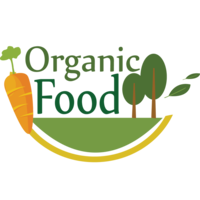
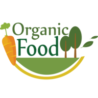
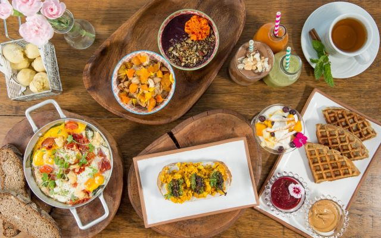

FOOD ZONE
Do you know these seals?
 

The raw materials used to prepare our breakfasts, brunches and rest are chosen prioritizing organic origin, animal and ecological welfare.
Which is the best membresy for me?
Y GENERATION
Z GENERATION
Breakfast-Menu
You can taste our breakfasts like:
Green Smoothie: Spinach, banana, apple, cucumber. Optional: Add a tablespoon of organic chia
seeds and organic plant-based milk (such as almond or oat milk).
Oatmeal Bowl: Whole oats, organic plant-based milk.
Optional: Top with fresh organic fruits (such as banana, strawberries, or blueberries),
organic
nuts (like walnuts or almonds), organic seeds (such as sunflower or pumpkin seeds), and
organic
natural sweetener (such as organic honey or agave syrup).
Avocado Toast: Organic whole-grain bread.
Spread mashed organic avocado on the bread and add sea salt and pepper to taste. You can
also
top it with organic tomato slices and fresh organic spinach.
Vegan Tofu Scramble: Organic tofu, organic vegetables (such as bell peppers, onion, and
spinach).
Prepare a vegan tofu scramble by using tofu as a substitute for eggs and sautéing the
vegetables. Add organic spices and seasonings to taste.
Healthy Mexican Breakfast: Organic eggs, organic black beans, organic avocado, organic
tomato
salsa.
Prepare scrambled eggs with organic vegetables like bell peppers, onions, and spinach. Serve
them with organic black beans and sliced organic avocado. Top it off with organic tomato
salsa.
Enjoy it with a cup of organic coffee.

Brunch Menu

You can also try our brunchs:
Avocado and Tomato Toast: Whole-grain bread, avocado, tomato, sea salt, pepper.
Vegan Breakfast Burritos: Whole wheat tortillas, scrambled tofu, spices, black beans, avocado,
vegan hot sauce.
Acai Bowl: Acai pulp, frozen banana, coconut milk, granola, strawberries, banana, chia seeds.
Vegan Tofu Benedict: Tofu, spices, soy sauce, whole-grain bread, spinach, vegan hollandaise
sauce, tomato, avocado.
Banana Oat Pancakes: Ripe bananas, oats, plant-based milk, salt, fresh fruits, nuts, maple
syrup.